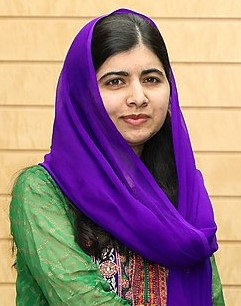

Malala Yousafzai (Urdu: ملالہ یوسفزئی, Pashto: ملاله یوسفزۍ, pronunciation: [məˈlaːlə jusəf ˈzəj];[4] born 12 July 1997)[1][4][5] is a Pakistani female education activist and the 2014 Nobel Peace Prize laureate.[6] Awarded when she was 17, she is the world's youngest Nobel Prize laureate, and the second Pakistani and the first Pashtun to receive a Nobel Prize.[7] She is known for human rights advocacy, especially the education of women and children in her native homeland, Swat, where the Pakistani Taliban had at times banned girls from attending school. Her advocacy has grown into an international movement, and according to former Prime Minister Shahid Khaqan Abbasi, she has become Pakistan's "most prominent citizen
| Name | Age | Dept |
|---|---|---|
| munisa | 20 | CABM |
| Sana | 19 | EC |
| Amna | 18 | IE |